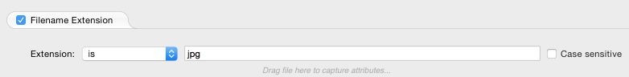
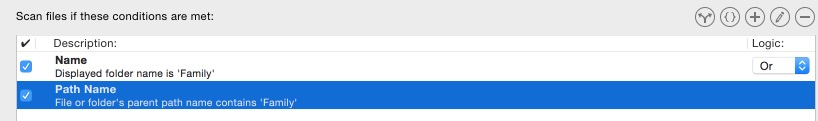

Rule Examples
Below are some examples of how to use rules to include specific files or folders. It's good to remember that "Simple" and "Intermediate" rules are inclusion rules, which means any file or folder that does not pass the rule is automatically excluded. You should also keep in mind that "Advanced" rules can be either inclusion or exclusions rules. If using a combination of "Advanced" inclusion and exclusion rules, only files and folders that first pass the inclusion test will be considered for exclusion. If a folder does not pass a rule then none of its contents will be included in the synchronization, even if they pass a rule.
Note: Use the Analyze panel to see the results of your rules without performing a synchronization. This way you can use a trial-and-error method to get the rules to work.
Make sure you check the "Show all entries" box at the top of the Analyze panel so that all files are displayed. Any file or folder with red-blue-red dots are excluded files because of a rule. You can also run "Trial Synchronizations" to see what files will be synchronized without actually running a synchronization.
Blue-blue-blue dots are files that are being ignored, usually they are invisible files. To synchronize invisible files uncheck "Ignore invisibles" in the Options panel.
You can find a complete list of the all the status icons in the Analyze Panel Icons legend.
Sometimes rules are not needed. For instance, to only copy your Pictures folder, simply select your Pictures folder as the target. To exclude your Pictures folder from a Home folder synchronization, just select it from the Analyze panel and from the "Actions" menu choose "Exclude".
Rule to copy only a specific kind of file:
To only copy all the jpeg image files in your Pictures folder, you would create one "Simple" rule.
Select the Pictures folder as your source target and create the rule below remembering NOT to include the dot (.) as part of the extension.

File rules only apply to files. Folder rules only apply to folders. So, after setting this up, only files that have an extension of jpg will copy. All other files are excluded. Since this rule only applies to files, all folders will still copy over. To stop any empty folders from copying over, go to the "Options" panel and check the "Don't create empty folders" option under "Special File/Folder Handling". Now only the folders that contain jpeg image files or folders that contain folders with jpeg image files will copy.
Rule to copy only a specific folder located in the target root:
To copy a folder called "Family" located directly inside the root of the Pictures folder, create one "Simple" rule.
Select the Pictures folder as your source target and create the rule below.
The rule will only apply to folders, so all files inside the root will still copy. Any folders inside "Family" will NOT copy over unless those folders are also named "Family". To copy all the files and all the folders inside the "Family" folder use the next rule below.
Rule to copy only a specific folder located in the target root, and all the folders inside:
To copy a folder called "Family" located directly inside the root of the Pictures folder and all its contents, both files and folders, create the following two "Intermediate" rules and connect them with "Or". Select the Pictures folder as your source target and create the rules below.

The "Name" rule will include the actual folder in the target.
Use the "Parent Pathname" rule, using "File and Folder contains", for the folder you want to synchronize - this will include all files and folders within the folder you want to synchronize.
Rule to copy only a specific folder nested within the target root, and all the folders inside:
To copy a folder called "Dad" nested deep within the root of the Pictures folder and all its contents, both files and folders, create the following "Intermediate" rule. Select the Pictures folder as your source target and create the rule below.
The "Parent Pathname" rule using "File starts with" for the folder you want to synchronize will include all files and folder within the folder you want to synchronize. Make sure you include the entire path. You can easily do this by simply dragging the folder onto the rule and releasing your mouse. The entire path will be inserted.
To stop any empty folders from copying over, go to the "Options" panel under "Special File/Folder Handling" and check the "Don't create empty folders" option. Now only the folder listed and its contents will copy over.
Shortcut: Instead of typing the entire path in the example above you can type: ":>" denotes the right target, ":[" denotes the left volume and ":]" denotes the right volume)
Note: Using the "Don't create empty folders" option will stop empty folders from copying over. However, they will still appear in the "Analyze" panel with arrows as if they are going to copy over. The reason for this is ChronoSync does not remove the empty folders until after the actual synchronization takes place.
These are just a few basic examples of rules. If you are having trouble creating rules please send us a support ticket using our online form.